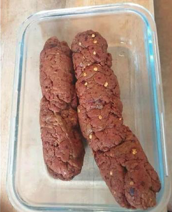

Delicious Plant-based Vegan Pepperoni
Cruelty-free soul food

Made with seitan. Perfect for pizza, pasta dishes, snacks, or just shove it straight in yer gob!
Dry ingredients
- 100 g Vital wheat gluten
- 1 teaspoon Cracked black pepper - (~47 twists of a pepper grinder)
- 1 teaspoon Crushed chillies
- 1.5 teaspoon Mustard powder
- 1 conservative teaspoon Salt
- 2 teaspoon Smoked paprika
- 1 teaspoon Garlic powder
- 0.5-1 teaspoon Mild chilli powder
Wet ingredients
- 100 ml cold water
- 1 tablespoon oil
- 1 tablespoon tomato puree
How to make it:
- In a mixing bowl, thoroughly combine the dry ingredients
- Separately, mix together the wet ingredients until the puree has completely dissolved.
- Pour the wet ingredients into the dry, use a spoon to combine them. Once a dough starts to form, use your hands to bring everything together.
- Fashion the dough into a sausage shape, tightly roll up in a sheet of foil and twist the ends of the foil like a sweet wrapper as tight as you can. It can help to fold the ends of the foil over to prevent unraveling.
- Get a pan of water simmering and steam your sausage for 45 mins.
- Once steamed, unwrap from the foil, and allow to cool to room temperature. Then wrap in cling film, a zip-loc or tupperware and keep in the fridge until completely cooled.
- lice into classic pepperoni slices for pizza or into bigger chunks to add to pasta dishes or similar.
MAIN PAGE